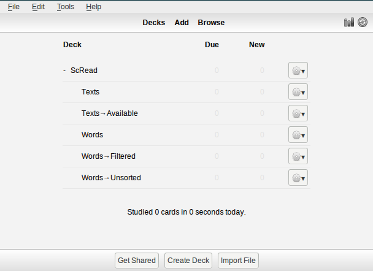
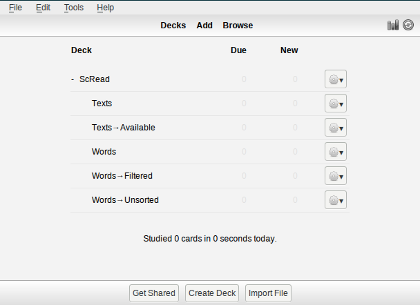
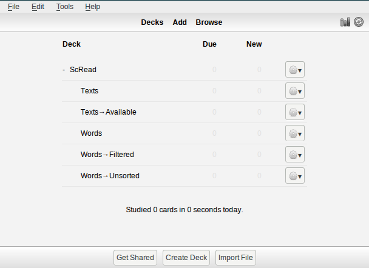
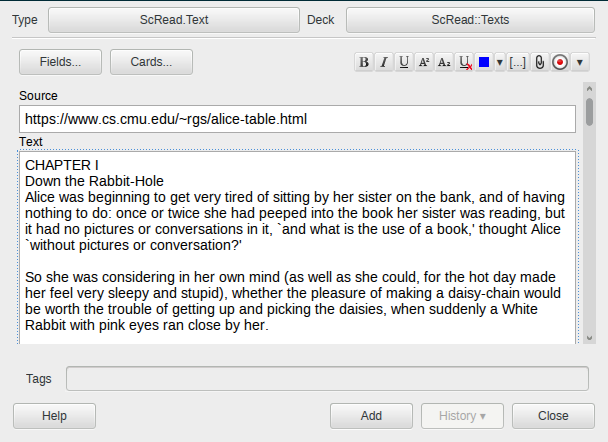
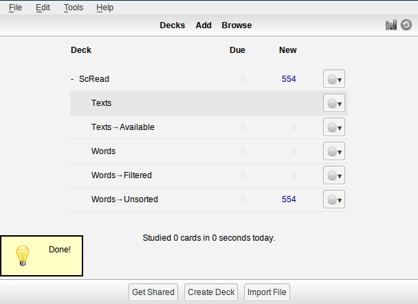

ScRead (short for Scrutinized Reading) is a plugin for Anki SRS.
It is a set of tools to help you read texts in a foreign language. In a nutshell, it ensures that you know all words in a text before you read it, and if not, it helps you to memorize them.
Copy scread folder and scread_loader.py to addons in your Anki's
home directory.
(!TODO not shared yet)
Check menu for Tools → ScRead item. If this is your first time,
choose Init. The decks will appear.

This is a description of a typical cycle of using the plugin.
Choose subdeck Texts and add texts you would like to read. Make sure
that type of note is set to ScRead.Text (see top left corner on the
screenshot). There are two fields:
Source — source of the text, e.g. url of an article, a book's name,
a chapter's number of a book, etc.Text — the text by itself
Then choose ScRead → Texts… menu. There are few options:
parse all — Will parse all texts you have added. This may take a lot of
time and result in enormous amount of cards, so use it wisely.parse next one — Will parse next one text you have added in chronological
order.parse next shortest one — Will parse next shortest one text you have
added. This is recommended option if you add unrelated texts.After that new cards will appear.

Go to subdeck Words → Unsorted. There will be all (new) extracted
words from your texts. For each card there you should choose either
Again or Good:
Again means this word is new for you and you would like to learn it.Good means this word is familiar to you, so you don't need it to be learned.Note that Easy button has no meaning, and each card will be checked only once.
You don't need to clear all deck at once, the filtering process (this)
and memorizing one (see the next paragraph) can be performed in parallel.

Choose ScRead → Words… → add translations to supply new cards with
translations. There are few sources:
trans utility)sdcv utility)To avoid abusing web services there are delays between translations, so this stage might be quite long.
After that new words will appear in Words → Filtered subdeck. It's a
typical memorizing deck, so you just learn words there.

Choose ScRead → Texts… → update estimations. This will determine which texts
you will able to read and place them in Texts → Available
subdeck. The rule of thumb is the most of new words must be in
mature state (see Anki's statistics).
In order to update the plugin just replace it's files, restart Anki
and choose ScRead → Init.
In order to clean up decks choose ScRead → Reset. This will erase
all data from Scread decks.
There are two options in Scread → Words… menu:
mark as known — This is equivalent to choose Good for all cards in
Words → Unsorted subdeck. It's useful when you add easy texts to
mark all those words as well-known, so they won't bother you in the
future.mark as unknown — This is equivalent to choose Again for all cards
in Words → Unsorted subdeck. It's useful when you have read a lot
of texts, so it's unlikely to encounter a familiar word.In case of big amount of web articles there may be taken a benefit of
scraping feature. To use it add new text with field Source filled
with a url and empty Text field. After that choose ScRead → Text… → fetch.
Text field will be filled with page contents and the note will be tagged as fetched.
Heuristic algorithm that extracts contents in the most cases does fine with a portion of surfeit texts like comments and links to related articles. That's why the note is tagged, so it should be checked and edited if necessary.
That's not perfect but much better than manual copying from browser.
Like in the previous case texts can be loaded from local filesystem. The files will be loaded "as is", without scraping procedure.
It's better to specify absolute path, like C:\books\chapter1.txt or
~/books/chapter1.txt.
In case of big amount of articles it may be tiresome to add note for
each url. This may be accomplished with ScRead.Batch notes.
Add a new note with List field filled with list of urls, each one on
a separate line. Both local and remote urls can be specified. In the
next invocation of ScRead → Text… → fetch corresponding notes will
be created and filled.

ScRead is licensed under GPL3.
Stemming algorithm by Martin Porter is licensed under BSD-compatible license.